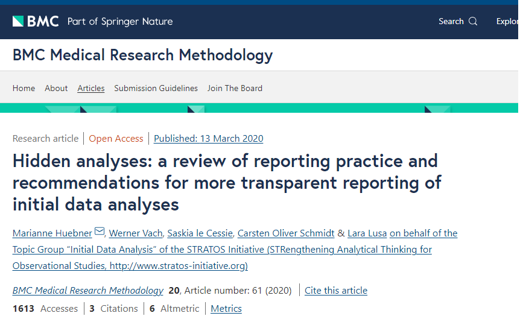
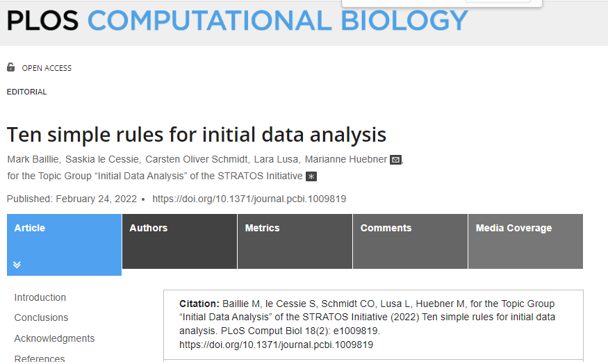
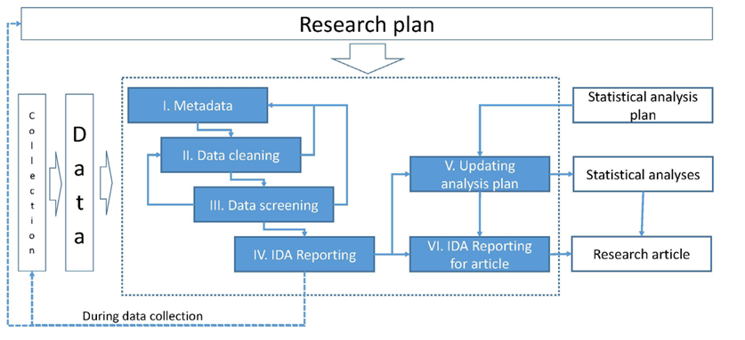
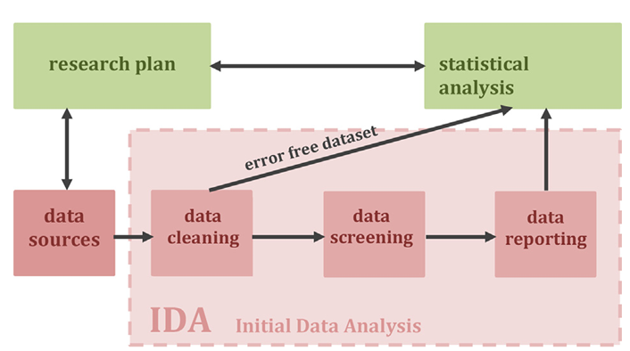

Sesión 3
Curso: R Aplicado a los Proyectos de Investigación
Percy Soto-Becerra, M.D., M.Sc(c)
InkaStats Data Science Solutions | Medical Branch
2022-10-05
Importación de datos
Agenda
Importación de datos
Más verbos de dplyr para manejo de datos
Otros verbos útiles para manejo de datos
Uso de helpers
Análisis Exploratorio de Datos versus Análisis Inicial de Datos
Pasos para un buen AID / AED
Importar datos de fuentes externas a R
El paquete {rio} es la navaja suiza
de la importación de datos en R.

Su función import
permite importar
prácticamente
cualquier formato.
Importando datos con {rio}
{rio} debe instalarse de una manera especial
Pasos:
- Primero se instala como siempre, usando install.packages
- Adicionalmente, se sugiere correr install_formats. inmediatamente después de la primera instalación.
- Se carga el paquete usando library.
- Más detalles sobre el paquete y sus funciones pueden encontrarse en la página web del paquete: https://thomasleeper.com/rio/index.html
- Se usa import() para importar nuevos datos y <- para asignar los datos a un nuevo data.frame
Podemos omitir los nombres de los argumentos cuando utilizamos funciones.
Para archivos de tipo *.csv o *.txt
No importa el tipo de separación de las columnas: comas, puntos y comas, otros caracteres.
- import() determinará rápidamente el tipo de separación y hará el trabajo.
id_jaula id_raton tratamiento protocolo peso_inicial peso_final peso_utero
1 1 1 control ovx 26.00 33.28 0.089
2 1 2 control ovx 24.50 30.50 0.063
3 1 3 control ovx 20.40 29.93 0.078
4 2 4 control hemiovx 26.59 32.19 0.134
5 2 5 control ovx 23.50 30.37 0.052
6 2 6 maca ovx 25.00 30.43 0.055
chol glucose tag prot urea album
1 85.99 109.97 182.42 5.37 66.27 66.82
2 94.46 81.62 211.87 4.68 76.73 55.36
3 99.67 118.37 195.16 NA 52.32 NA
4 83.38 71.91 98.46 NA 50.71 NA
5 82.08 95.53 108.13 5.33 26.02 NA
6 107.49 160.36 141.10 NA NA 72.14- Útil para archivos con las extensiones *.xls o *.xlsx
id_jaula id_raton tratamiento protocolo peso_inicial peso_final peso_utero
1 1 1 control ovx 26.00 33.28 0.089
2 1 2 control ovx 24.50 30.50 0.063
3 1 3 control ovx 20.40 29.93 0.078
4 2 4 control hemiovx 26.59 32.19 0.134
5 2 5 control ovx 23.50 30.37 0.052
6 2 6 maca ovx 25.00 30.43 0.055
chol glucose tag prot urea album
1 85.99 109.97 182.42 5.37 66.27 66.82
2 94.46 81.62 211.87 4.68 76.73 55.36
3 99.67 118.37 195.16 NA 52.32 NA
4 83.38 71.91 98.46 NA 50.71 NA
5 82.08 95.53 108.13 5.33 26.02 NA
6 107.49 160.36 141.10 NA NA 72.14Permite importar datos de formato Stata. Sin embargo, en Stata, los valores de las variables suelen estar etiquetados, por lo que es importante también recuperar esta información.
Si importamos una tabla de datos en formato Stata, vemos que algunas variables categóricas como
marriedomarried2se importan como números. ¿Qué significa 1 o 0?
id time treat age race married married2 procedence weight height e2
1 1 0 1 33 Mestiza 1 0 Callao 59.0 1.4 87.30
2 1 1 1 32 Mestiza 1 0 Callao 59.9 1.3 210.05
3 2 0 3 27 Mestiza 1 0 Santa Anita 62.0 1.5 169.01
4 2 1 3 27 Mestiza 1 0 Santa Anita 62.1 1.6 99.91
5 3 0 2 25 Mestiza 1 0 Callao 62.0 1.6 78.76
6 3 1 2 25 Mestiza 1 0 Callao 60.0 1.6 155.04
lh fsh prog
1 3.28 1.95 14.20
2 26.85 8.83 12.95
3 6.34 4.32 0.50
4 5.77 1.70 9.61
5 11.86 2.81 10.46
6 10.14 4.51 5.04- Lo mismo que ocurre con Stata, sucede con SPSS: los metadatos se pierden.
ID1 HHID HV000 HV001 HV002 HV002A HV003 HV004 HV007 HV008 HV009
1 2021 000100301 PE6 1 3 1 2 1 2021 1454 6
2 2021 000100401 PE6 1 4 1 1 1 2021 1454 5
3 2021 000100801 PE6 1 8 1 2 1 2021 1454 6
4 2021 000101001 PE6 1 10 1 1 1 2021 1454 5
5 2021 000102901 PE6 1 29 1 0 1 2021 1454 0
6 2021 000104201 PE6 1 42 1 2 1 2021 1454 3
HV010 HV011 HV012 HV013 HV014 HV015 HV017 HV020 HV021 HV023 HV024 HV025 HV026
1 2 0 6 5 1 1 1 0 1 1 1 1 1
2 1 0 5 5 1 1 1 0 1 1 1 1 1
3 2 0 6 6 2 1 1 0 1 1 1 1 1
4 1 0 5 5 0 1 1 0 1 1 1 1 1
5 0 0 0 0 0 3 4 0 1 1 1 1 1
6 1 0 3 3 1 1 1 0 1 1 1 1 1
HV027 HV028 HV030 HV031 HV032 HV033 HV035 HV040 HV041 HV042 HV043 HV044
1 0 NA 0 NA 0 NA 1 2338 2 1 0 1
2 0 NA 0 NA 0 NA 1 2338 1 1 0 1
3 0 NA 0 NA 0 NA 1 2338 2 1 0 1
4 0 NA 0 NA 0 NA 0 2338 1 1 0 1
5 0 NA 0 NA 0 NA 0 2338 0 1 0 1
6 0 NA 0 NA 0 NA 1 2338 1 1 0 1
UBIGEO HV022 CODCCPP NOMCCPP NCONGLOME HV005 longitudx latitudy
1 010101 3 0001 CHACHAPOYAS 0706402 103273 -77.87403 -6.221249
2 010101 3 0001 CHACHAPOYAS 0706402 103273 -77.87403 -6.221249
3 010101 3 0001 CHACHAPOYAS 0706402 103273 -77.87403 -6.221249
4 010101 3 0001 CHACHAPOYAS 0706402 532968 -77.87403 -6.221249
5 010101 3 0001 CHACHAPOYAS 0706402 0 -77.87403 -6.221249
6 010101 3 0001 CHACHAPOYAS 0706402 103273 -77.87403 -6.221249La función import soporta una gran variedad de formatos.
Si alguna vez necesita, puede consultar la web del paquete y encontrará tutoriales de cómo importar los formatos que requiera.
¿Cómo importar metadatos de Stata o SPSS?
Son los datos de los datos.
En bases de datos para análisis estadístico, dos metadatos bastante usados son:
Etiquetas de la variable
Etiquetas de los valores de la variable

Importar datos Stata solo con import()
- Las etiquetas de valor para
time,treat,marriedymarried2se pierden.
Usar import() más characterize()
- Las etiquetas de valor para
time,treat,marriedymarried2se recuperan
Importar datos SPSS solo con import()
- Las etiquetas de valor para
time,treat,marriedymarried2se pierden.
Usar import() más characterize()
- Las etiquetas de valor para
time,treat,marriedymarried2se recuperan
Exportando datos con {rio}
- Se usa export() para exportar un objeto
data frameodata tibblea otro formato:
- Los formatos pueden ser:
| Formato | Extensión típica |
|---|---|
| Comma-separated data | .csv |
| Pipe-separated data | .psv |
| Tab-separated data | .tsv |
| CSVY (CSV + YAML metadata header) | .csvy |
| SAS | .sas7bdat |
| SPSS | .sav |
| SPSS (compressed) | .zsav |
| Stata | .dta |
| SAS XPORT | .xpt |
| SPSS Portable | .por |
| Excel | .xls |
| Excel | .xlsx |
| R syntax | .R |
| Saved R objects | .RData, .rda |
| Serialized R objects | .rds |
| Epiinfo | .rec |
Nuestro turno
Descargue la carpeta denominada taller03 disponible en la carpeta compartida.
Abra el proyecto denominado taller03.Rproj
Complete y ejecute el código faltante en los chunk de código de la PRIMERA PARTE.
Una vez culmine todo el proceso, renderice el archivo .qmd.
10:00
Hagamos una pausa
Tomemos un descanso de 5 minutos…
Estire las piernas …
Deje de ver las pantallas …
… cualquier , las del celular también.
05:00
Más verbos de dplyr para manejo de datos
Agenda
Importación de datos
Más verbos de dplyr para manejo de datos
Otros verbos útiles para manejo de datos
Uso de helpers
Análisis Exploratorio de Datos versus Análisis Inicial de Datos
Pasos para un buen AID / AED
Creación de nuevas columnas con mutate()
- La función mutate() crea columnas nuevas o modifica existentes.
mutate() en acción
- Si queremos crear la variable índice de masa corporal:
datos_fase1 %>%
select(id, weight, height) %>% # Nos quedamos con peso y talla
mutate(imc = weight / height ^ 2) # Creamos IMC en base a peso y talla# A tibble: 106 × 4
id weight height imc
<dbl> <dbl> <dbl> <dbl>
1 1 59 1.4 30.1
2 1 59.9 1.3 35.4
3 2 62 1.5 27.6
4 2 62.1 1.6 24.3
5 3 62 1.6 24.2
6 3 60 1.6 23.4
7 4 60.9 1.5 27.1
8 4 61.4 1.5 27.3
9 5 64 1.5 28.4
10 5 58.1 1.6 22.7
# … with 96 more rowsTambién podemos crear más de una variable nueva.
Incluso, podemos reutilizar la variable recién creada para crear otra nueva dentro del mismo argumento de mutate()
datos_fase1 %>%
select(id, weight, height) %>%
mutate(
imc = weight / height ^ 2,
imc_escalado = imc / 10
) # A tibble: 106 × 5
id weight height imc imc_escalado
<dbl> <dbl> <dbl> <dbl> <dbl>
1 1 59 1.4 30.1 3.01
2 1 59.9 1.3 35.4 3.54
3 2 62 1.5 27.6 2.76
4 2 62.1 1.6 24.3 2.43
5 3 62 1.6 24.2 2.42
6 3 60 1.6 23.4 2.34
7 4 60.9 1.5 27.1 2.71
8 4 61.4 1.5 27.3 2.73
9 5 64 1.5 28.4 2.84
10 5 58.1 1.6 22.7 2.27
# … with 96 more rowsTener cuidado si se quiere reutilizar la variable original, en ese caso es mejor crear columna nueva.
Queremos que la edad sea reportada en meses:
Crear columna nueva:
Otros verbos útiles para manejo de datos
Agenda
Importación de datos
Más verbos de dplyr para manejo de datos
Otros verbos útiles para manejo de datos
Uso de helpers
Análisis Exploratorio de Datos versus Análisis Inicial de Datos
Pasos para un buen AID / AED
Renombrar variables con rename()
- Cambia los nombres de variables individuales.
rename() en acción
- Cambiar el nombre de
marriedporcasado1y el deageporedad.
# A tibble: 106 × 14
id time treat edad race casado1 marri…¹ proce…² weight height e2
<dbl> <fct> <fct> <dbl> <chr> <fct> <fct> <chr> <dbl> <dbl> <dbl>
1 1 Baseline Place… 33 Mest… Single Withou… Callao 59 1.4 87.3
2 1 3 months Place… 32 Mest… Single Withou… Callao 59.9 1.3 210.
3 2 Baseline Dosis… 27 Mest… Single Withou… Santa … 62 1.5 169.
4 2 3 months Dosis… 27 Mest… Single Withou… Santa … 62.1 1.6 99.9
5 3 Baseline Dosis… 25 Mest… Single Withou… Callao 62 1.6 78.8
6 3 3 months Dosis… 25 Mest… Single Withou… Callao 60 1.6 155.
7 4 Baseline Dosis… 37 Mest… Divorc… Withou… Callao 60.9 1.5 41.0
8 4 3 months Dosis… 38 Mest… Divorc… Withou… Callao 61.4 1.5 109.
9 5 Baseline Place… 31 Mest… Single Withou… La Mol… 64 1.5 43.0
10 5 3 months Place… 32 Mest… Single Withou… La Mol… 58.1 1.6 56.0
# … with 96 more rows, 3 more variables: lh <dbl>, fsh <dbl>, prog <dbl>, and
# abbreviated variable names ¹married2, ²procedenceRecodificar valores de variables con recode()
- Cambia los nombres de las etiquetas de valores de las variables.
recode() en acción
- Cambiar los valores de married2 del inglés al español:
datos_fase1 %>%
mutate(married2 = recode(married2,
"Without couple" = "Sin pareja",
"With couple" = "Con pareja"))# A tibble: 106 × 14
id time treat age race married marri…¹ proce…² weight height e2
<dbl> <fct> <fct> <dbl> <chr> <fct> <fct> <chr> <dbl> <dbl> <dbl>
1 1 Baseline Place… 33 Mest… Single Sin pa… Callao 59 1.4 87.3
2 1 3 months Place… 32 Mest… Single Sin pa… Callao 59.9 1.3 210.
3 2 Baseline Dosis… 27 Mest… Single Sin pa… Santa … 62 1.5 169.
4 2 3 months Dosis… 27 Mest… Single Sin pa… Santa … 62.1 1.6 99.9
5 3 Baseline Dosis… 25 Mest… Single Sin pa… Callao 62 1.6 78.8
6 3 3 months Dosis… 25 Mest… Single Sin pa… Callao 60 1.6 155.
7 4 Baseline Dosis… 37 Mest… Divorc… Sin pa… Callao 60.9 1.5 41.0
8 4 3 months Dosis… 38 Mest… Divorc… Sin pa… Callao 61.4 1.5 109.
9 5 Baseline Place… 31 Mest… Single Sin pa… La Mol… 64 1.5 43.0
10 5 3 months Place… 32 Mest… Single Sin pa… La Mol… 58.1 1.6 56.0
# … with 96 more rows, 3 more variables: lh <dbl>, fsh <dbl>, prog <dbl>, and
# abbreviated variable names ¹married2, ²procedenceNuestro turno
Descargue la carpeta denominada taller03 disponible en la carpeta compartida.
Abra el proyecto denominado taller03.Rproj
Complete y ejecute el código faltante en los chunk de código de la SEGUNDA PARTE.
Una vez culmine todo el proceso, renderice el archivo .qmd.
10:00
Uso de helpers
Agenda
Importación de datos
Más verbos de dplyr para manejo de datos
Otros verbos útiles para manejo de datos
Uso de helpers
Análisis Exploratorio de Datos versus Análisis Inicial de Datos
Pasos para un buen AID / AED
Selectores tidy
Son funciones que ayudan a especificar un grupo específico de columnas.
Ejemplos típicos de funciones tidyselect son:
starts_with()
end_with()
contains()
matches()
last_col()
num_range()
where()
Más información sobre tidylsect: https://dplyr.tidyverse.org/reference/select.html
Nuestro turno
Descargue la carpeta denominada taller03 disponible en la carpeta compartida.
Abra el proyecto denominado taller03.Rproj
Complete y ejecute el código faltante en los chunk de código de la TERCERA PARTE.
Una vez culmine todo el proceso, renderice el archivo .qmd.
10:00
Análisis Exploratorio de Datos versus Análisis Inicial de Datos
Agenda
Importación de datos
Más verbos de dplyr para manejo de datos
Otros verbos útiles para manejo de datos
Uso de helpers
Análisis Exploratorio de Datos versus Análisis Inicial de Datos
Pasos para un buen AID / AED
El análisis inicial de datos y el análisis exploratorio de datos son dos cosas diferentes!!
Análisis Exploratorio de Datos
Análisis Exploratorio de Datos
El AED es un enfoque de análisis de conjunto de datos para identificar patrones y formular nuevas hipótesis.
Se trata de ver qué nos dice los datos más allá de ideas pre-concebidas.
Las nuevas hipótesis luego se confirman en otros nuevos estudios rigurosos.
Su versión moderna: Minería de Datos (Data Minning)
Análisis Inicial de Datos
El AID, a menudo, se confunde erróneamente con el AED:
- Ambos son dos enfoques totalmente diferentes que comparten herramietnas comunes.
Objetivo del AID:
“(…) garantizar principalmente la transparencia y la integridad de las condiciones previas para realizar análisis estadísticos apropiados de manera responsable para responder preguntas de investigación predefinidas.”
Baillie M, et al. [PLoS Comput Biol, 2022](https://doi.org/10.1371/journal.pcbi.1009819)
Análisis Inicial de Datos vs. Análisis Exploratorio de Datos
| AID | AED |
|---|---|
| 1. AID es el paso inicial del proceso de confirmación de hipótesis pre-definidas. | 1. AED busca generar hipótesis nuevas. |
| 2. En investigación clínico-epidemiológica, a menudo queremos y deberíamos hacer AID. | 2. Rara vez queremos AED (p. ej., enfermedades nuevas, fenómenos muy poco conocidos) |
| 3. Proceso clave para garantizar responder adecuadamente objetivos pre-planeados de estudio. | 3. Proceso con alto riesgo de contaminar respuesta a objetivos pre-planeados de estudio. |
Mala práctica: ¡Hacer AED en vez de AID!
A menudo, investigadores no realizan AID de manera sistemática.
Mezclan actividades de AID con tareas posteriores de análisis de datos, como generación o exploración de hipótesis, análisis formal e interpretación de conclusiones.
Como se hacen “informalmente”, no se reportan en detalle generándose análisis ocultos.
Estos análisis ocultos generan problemas en la reproducibilidad de los estudios.
Generan muchos grados de libertad adicionales ocasionando problemas serios de validez de los análisis: p-hacking, post-selection inference, double-dipping, overfitting, etc.
Iniciativa STRATOS ha dado pautas para realizar AID apropiados.
El problema de los análisis ocultos

Recomendaciones de STRATOS para hacer un buen AID

AID es un proceso iterativo
Proceso no lineal, al contrario, requiere muchas iteraciones.
Riesgo: Puede influir en análisis e inducir conclusiones erróneas.
- Mayor riesgo de restultados falsos positivos.
Ser cuidados para:
- Evitar alterar la pregunta de investigación.
- Proveer documentación completa del proceso.
AID como parte del plan de investigación

AID como parte del plan de investigación
10 recomendaciones de STRATOS para un buen AID
Regla 1: Desarrolle un plan de AID que respalde el objetivo de la investigación.
Regla 2: AID toma tiempo y recursos.
Regla 3: AID debe ser reproducible.
Regla 4: El contexto importa, conoce tus datos.
Regla 5: Evite los adelantos, AID no toca la pregunta de investigación.
Regla 6: Visualiza tus datos.
Regla 7: Compruebe lo que falte.
Regla 8: Comunicar los hallazgos y considerar las consecuencias.
Regla 9: Reporte los hallazgos del AID en trabajos de investigación (¡adjunte anexos!)
Regla 10: Sea proactivo y riguroso.
10 recomendaciones de STRATOS para un buen AID
Regla 1: Desarrolle un plan de AID que respalde el objetivo de la investigación → ¡Escríbalo en el proyecto o anexe un plan de análisis estadístico detallado!
Regla 2: AID toma tiempo y recursos.→ Presupueste RRHH y tiempo razonable
Regla 3: AID debe ser reproducible.→ Use programas que generen código
Regla 4: El contexto importa, conoce tus datos.→ {dplyr} en R
Regla 5: Evite los adelantos, AID no toca la pregunta de investigación.→ ¡No haga ’análisis perliminar` sin antes inspeccionar y limpiar bien lso datos!
Regla 6: Visualiza tus datos.→ {ggplot2} en R
Regla 7: Compruebe lo que falte.→ {tidyverse} para queries en R
Regla 8: Comunicar los hallazgos y considerar las consecuencias.→ Quarto para programación literaria en R
Regla 9: Reporte los hallazgos del AID en trabajos de investigación (¡adjunte anexos!).→ Ídem
Regla 10: Sea proactivo y riguroso.→ ¡Los datos son como sus pacientes, use las mejores técnicas y herramientas disponibles!
Regla 4: El contexto importa, conoce tus datos
- Dé una primera mirada global a los datos
- Diseñe una lista de validaciones a realizar desde el proyecto.
- Valida tus datos:
- Identifique duplicados y detecte inconsistencias
- Valores extremos no plausibles
- Identifique valores perdidos
- En R, use los verbos básicos de {dplyr} para hacer consultas (“queries”) a sus datos:
filter(),select(),mutate(),arrange()ysummarise().
Pasos para un buen AID / AED
Agenda
Importación de datos
Más verbos de dplyr para manejo de datos
Otros verbos útiles para manejo de datos
Uso de helpers
Análisis Exploratorio de Datos versus Análisis Inicial de Datos
Pasos para un buen AID / AED
Paso 1: Resumen global de los datos
Dimensiones: columnas y filas
Variables y tipos
Datos completos y faltantes
Variables numéricas: Mínimos, máximos y valores extremos
Variables categóricas: Valores o categorías muy poco frecuentes y datos perdidos encubiertos
- Heche un vistazo de los datos con glimpse():
Rows: 26
Columns: 13
$ id_jaula <dbl> 1, 1, 1, 2, 2, 2, 2, 3, 3, 3, 5, 5, 5, 5, 8, 8, 9, 9, 9, …
$ id_raton <dbl> 1, 2, 3, 4, 5, 6, 7, 8, 9, 10, 11, 12, 13, 14, 15, 16, 17…
$ tratamiento <chr> "control", "control", "control", "control", "control", "m…
$ protocolo <chr> "ovx", "ovx", "ovx", "hemiovx", "ovx", "ovx", "ovx", "ovx…
$ peso_inicial <dbl> 26.00, 24.50, 20.40, 26.59, 23.50, 25.00, 24.80, 23.20, 2…
$ peso_final <dbl> 33.28, 30.50, 29.93, 32.19, 30.37, 30.43, 28.77, 27.30, 2…
$ peso_utero <dbl> 0.089, 0.063, 0.078, 0.134, 0.052, 0.055, 0.064, 0.062, 0…
$ chol <dbl> 85.990, 94.460, 99.670, 83.380, 82.080, 107.490, 76.870, …
$ glucose <dbl> 109.97, 81.62, 118.37, 71.91, 95.53, 160.36, 195.53, 182.…
$ tag <dbl> 182.42, 211.87, 195.16, 98.46, 108.13, 141.10, 95.82, 105…
$ prot <dbl> 5.37, 4.68, NA, NA, 5.33, NA, 5.02, 6.12, NA, 4.85, NA, N…
$ urea <dbl> 66.27, 76.73, 52.32, 50.71, 26.02, NA, 40.78, 66.94, NA, …
$ album <dbl> 66.82, 55.36, NA, NA, NA, 72.14, 67.09, 70.64, 66.27, 83.…- La función skim() del paquete [skim]r]{.plo} genera un resumen global de los datos:
| Name | datos |
| Number of rows | 26 |
| Number of columns | 13 |
| _______________________ | |
| Column type frequency: | |
| character | 2 |
| numeric | 11 |
| ________________________ | |
| Group variables | None |
Variable type: character
| skim_variable | n_missing | complete_rate | min | max | empty | n_unique | whitespace |
|---|---|---|---|---|---|---|---|
| tratamiento | 0 | 1 | 4 | 25 | 0 | 5 | 0 |
| protocolo | 0 | 1 | 3 | 7 | 0 | 3 | 0 |
Variable type: numeric
| skim_variable | n_missing | complete_rate | mean | sd | p0 | p25 | p50 | p75 | p100 | hist |
|---|---|---|---|---|---|---|---|---|---|---|
| id_jaula | 0 | 1.00 | 4.92 | 3.36 | 1.00 | 2.00 | 4.00 | 8.75 | 10.00 | ▇▃▃▂▆ |
| id_raton | 0 | 1.00 | 11.19 | 6.85 | 1.00 | 5.25 | 10.50 | 16.75 | 23.00 | ▇▆▆▅▆ |
| peso_inicial | 0 | 1.00 | 23.72 | 1.93 | 18.90 | 22.69 | 23.50 | 24.95 | 27.90 | ▂▃▇▆▂ |
| peso_final | 0 | 1.00 | 28.77 | 2.30 | 23.80 | 26.97 | 28.77 | 30.34 | 33.28 | ▂▇▇▆▃ |
| peso_utero | 0 | 1.00 | 0.09 | 0.10 | 0.01 | 0.06 | 0.07 | 0.09 | 0.54 | ▇▁▁▁▁ |
| chol | 0 | 1.00 | 82.25 | 12.13 | 59.28 | 74.91 | 82.73 | 85.99 | 107.49 | ▃▃▇▂▂ |
| glucose | 0 | 1.00 | 125.35 | 37.52 | 60.10 | 97.30 | 116.53 | 148.82 | 195.53 | ▃▇▆▃▅ |
| tag | 0 | 1.00 | 150.08 | 51.70 | 90.99 | 108.13 | 137.80 | 184.39 | 282.64 | ▇▂▅▁▁ |
| prot | 12 | 0.54 | 5.24 | 0.45 | 4.68 | 4.93 | 5.24 | 5.36 | 6.17 | ▇▃▇▁▃ |
| urea | 10 | 0.62 | 55.60 | 31.21 | 26.02 | 38.16 | 48.16 | 66.27 | 157.89 | ▇▃▁▁▁ |
| album | 13 | 0.50 | 66.21 | 7.71 | 52.77 | 64.64 | 66.82 | 68.59 | 83.73 | ▂▂▇▁▁ |
- La función describe() del paquete Hmisc genera un reporte general bien detallado, variable por variable:
datos
13 Variables 26 Observations
--------------------------------------------------------------------------------
id_jaula : ID de jaula
n missing distinct Info Mean Gmd
26 0 7 0.978 4.923 3.815
lowest : 1 2 3 5 8, highest: 3 5 8 9 10
Value 1 2 3 5 8 9 10
Frequency 4 5 4 4 2 4 3
Proportion 0.154 0.192 0.154 0.154 0.077 0.154 0.115
--------------------------------------------------------------------------------
id_raton : ID de ratón
n missing distinct Info Mean Gmd .05 .10
26 0 23 0.999 11.19 8.046 1.25 2.50
.25 .50 .75 .90 .95
5.25 10.50 16.75 20.50 21.75
lowest : 1 2 3 4 5, highest: 19 20 21 22 23
--------------------------------------------------------------------------------
tratamiento : Tratamiento asignado
n missing distinct
26 0 5
lowest : control maca maca + critro sham operated triple dosis maca + citro
highest: control maca maca + critro sham operated triple dosis maca + citro
control (7, 0.269), maca (6, 0.231), maca + critro (4, 0.154), sham operated
(4, 0.154), triple dosis maca + citro (5, 0.192)
--------------------------------------------------------------------------------
protocolo : Tipo de protocolo de modelo animal
n missing distinct
26 0 3
Value hemiovx no ovx ovx
Frequency 3 4 19
Proportion 0.115 0.154 0.731
--------------------------------------------------------------------------------
peso_inicial : Peso inicial
n missing distinct Info Mean Gmd .05 .10
26 0 19 0.997 23.72 2.171 20.77 21.90
.25 .50 .75 .90 .95
22.69 23.50 24.95 26.00 26.44
lowest : 18.90 20.40 21.90 22.40 22.50, highest: 25.30 25.50 26.00 26.59 27.90
Value 18.90 20.40 21.90 22.40 22.50 22.69 22.90 23.20 23.40 23.50 23.90
Frequency 1 1 2 1 1 2 1 1 2 3 1
Proportion 0.038 0.038 0.077 0.038 0.038 0.077 0.038 0.038 0.077 0.115 0.038
Value 24.50 24.80 25.00 25.30 25.50 26.00 26.59 27.90
Frequency 2 1 1 1 1 2 1 1
Proportion 0.077 0.038 0.038 0.038 0.038 0.077 0.038 0.038
--------------------------------------------------------------------------------
peso_final : Peso final
n missing distinct Info Mean Gmd .05 .10
26 0 21 0.998 28.77 2.616 25.37 26.69
.25 .50 .75 .90 .95
26.97 28.77 30.34 31.34 33.01
lowest : 23.80 24.93 26.68 26.70 26.86, highest: 30.37 30.43 30.50 32.19 33.28
--------------------------------------------------------------------------------
peso_utero : Peso uterino
n missing distinct Info Mean Gmd .05 .10
26 0 23 0.999 0.09012 0.07069 0.01750 0.03400
.25 .50 .75 .90 .95
0.05550 0.06900 0.08875 0.12350 0.16550
lowest : 0.014 0.016 0.022 0.046 0.052, highest: 0.108 0.113 0.134 0.176 0.535
--------------------------------------------------------------------------------
chol : Colesterol
n missing distinct Info Mean Gmd .05 .10
26 0 21 0.997 82.25 13.8 64.75 66.44
.25 .50 .75 .90 .95
74.91 82.73 85.99 97.72 103.58
lowest : 59.28 64.40 65.79 67.10 68.40, highest: 94.46 95.76 99.67 104.88 107.49
--------------------------------------------------------------------------------
glucose : Glucosa
n missing distinct Info Mean Gmd .05 .10
26 0 23 0.999 125.3 43.48 73.49 79.92
.25 .50 .75 .90 .95
97.30 116.53 148.82 183.46 184.51
lowest : 60.10 71.91 78.22 81.62 94.23, highest: 160.36 168.50 182.41 184.51 195.53
--------------------------------------------------------------------------------
tag : Triglicéridos
n missing distinct Info Mean Gmd .05 .10
26 0 22 0.998 150.1 58.3 91.54 94.50
.25 .50 .75 .90 .95
108.13 137.81 184.39 205.94 236.60
lowest : 90.99 93.19 95.82 98.46 105.49, highest: 199.12 200.00 211.87 244.84 282.64
--------------------------------------------------------------------------------
prot : Proteína
n missing distinct Info Mean Gmd .05 .10
14 12 10 0.987 5.24 0.4943 4.745 4.801
.25 .50 .75 .90 .95
4.930 5.240 5.360 5.895 6.138
lowest : 4.68 4.78 4.85 4.93 5.02, highest: 5.15 5.33 5.37 6.12 6.17
Value 4.68 4.78 4.85 4.93 5.02 5.15 5.33 5.37 6.12 6.17
Frequency 1 1 1 2 1 1 3 2 1 1
Proportion 0.071 0.071 0.071 0.143 0.071 0.071 0.214 0.143 0.071 0.071
--------------------------------------------------------------------------------
urea : Urea
n missing distinct Info Mean Gmd .05 .10
16 10 14 0.997 55.6 29.8 26.02 30.25
.25 .50 .75 .90 .95
38.16 48.16 66.27 71.84 97.02
lowest : 26.02 34.48 37.96 38.23 40.78, highest: 60.37 66.27 66.94 76.73 157.89
Value 26.02 34.48 37.96 38.23 40.78 43.06 45.61 50.71 52.32
Frequency 2 1 1 1 1 1 1 1 1
Proportion 0.125 0.062 0.062 0.062 0.062 0.062 0.062 0.062 0.062
Value 60.37 66.27 66.94 76.73 157.89
Frequency 1 2 1 1 1
Proportion 0.062 0.125 0.062 0.062 0.062
--------------------------------------------------------------------------------
album : Albuminemia
n missing distinct Info Mean Gmd .05 .10
13 13 11 0.995 66.21 8.408 54.32 56.21
.25 .50 .75 .90 .95
64.64 66.82 68.59 71.84 76.78
lowest : 52.77 55.36 59.59 64.64 66.27, highest: 67.09 68.59 70.64 72.14 83.73
Value 52.77 55.36 59.59 64.64 66.27 66.82 67.09 68.59 70.64 72.14 83.73
Frequency 1 1 1 1 2 2 1 1 1 1 1
Proportion 0.077 0.077 0.077 0.077 0.154 0.154 0.077 0.077 0.077 0.077 0.077
--------------------------------------------------------------------------------Nuestro turno
Descargue la carpeta denominada taller03 disponible en la carpeta compartida.
Abra el proyecto denominado taller03.Rproj
Complete y ejecute el código faltante en los chunk de código de la CUARTA PARTE.
Una vez culmine todo el proceso, renderice el archivo .qmd.
10:00
@psotob91
https://github.com/psotob91
percys1991@gmail.comR Aplicado a los Proyectos de Investigación - Sesión 3